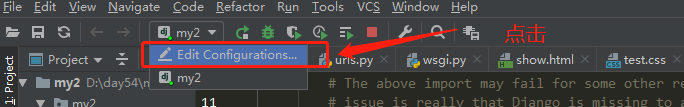

pip3 install django==1.11.22
目前来讲1.11.22版本比较稳定
django-admin startproject django项目名称加载css,js相关文件配置
首先要创建static文件夹且把css已经js丢进去
STATIC_URL = '/static/'
STATICFILES_DIRS = (
os.path.join(BASE_DIR, 'static'),
)
#如果,少了加载css会报500的错误,如果么有配置STATICFILES_DIRS会报404的错误MIDDLEWARE = [
'django.middleware.security.SecurityMiddleware',
'django.contrib.sessions.middleware.SessionMiddleware',
'django.middleware.common.CommonMiddleware',
#'django.middleware.csrf.CsrfViewMiddleware',
'django.contrib.auth.middleware.AuthenticationMiddleware',
'django.contrib.messages.middleware.MessageMiddleware',
'django.middleware.clickjacking.XFrameOptionsMiddleware',
]读取html文件的时候
'DIRS': [os.path.join(BASE_DIR, 'templates')]非本机访问
ALLOWED_HOSTS = ['指定ip1','指定ip2']
ALLOWED_HOSTS = ['*'] #全部ip命令行启动django时候绑定ip和端口python manage.py runserver ip:port
pycharm中修改
LANGUAGE_CODE = 'zh-hans' #django1.8以后不支持zh-cn
TIME_ZONE = 'Asia/Shanghai'
USE_I18N = True
USE_L10N = True
USE_TZ = False #默认是Ture，时间是utc时间，由于我们要用本地时间，所用手动修改为